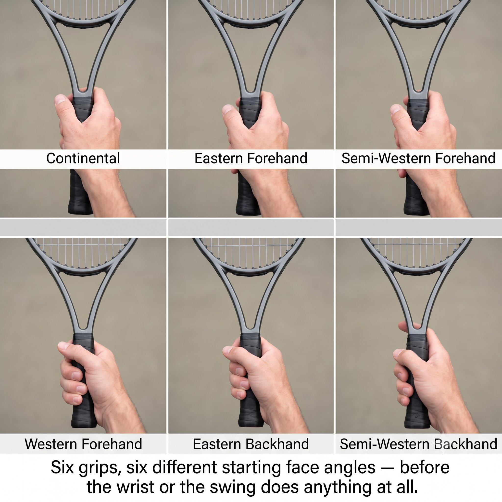
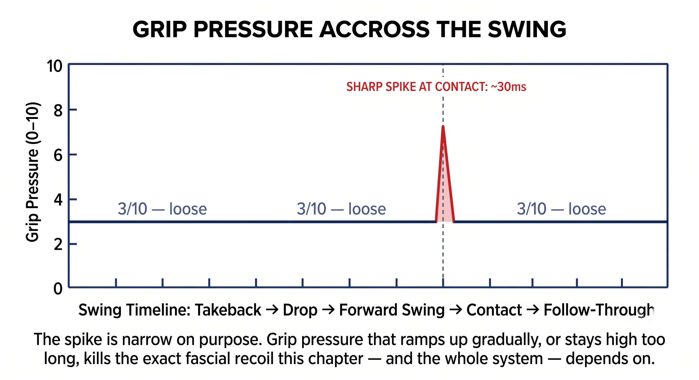

Chương 2: Công Cụ¶
Các Loại Cầm Vợt và Góc Mặt Vợt Cơ Bản¶
Cầm vợt thiết lập góc mặt vợt cơ bản của bạn. Mọi thứ khác — điểm tiếp xúc, cổ tay, đường vung — chỉ điều chỉnh dựa trên nền đó.
Cầm vợt không tạo ra topspin hay slice. Cầm vợt tạo ra một góc mặt vợt tự nhiên ứng với một tư thế cổ tay cho trước.
— Henry Phạm

Hình 2.1
Nguyên Lý Cốt Lõi: Cầm Vợt Thiết Lập Mặt Vợt Cơ Bản¶
Cầm vợt đơn giản chỉ là vị trí khởi đầu của mặt vợt so với bàn tay bạn. Nó không “tạo ra” xoáy. Nó thiết lập góc mặt vợt trung lập mà cây vợt thể hiện khi cổ tay bạn thư giãn, ở tư thế tự nhiên, tại điểm tiếp xúc lý tưởng.
Cách hiểu đơn giản nhất: cầm vợt với cổ tay thư giãn tại điểm tiếp xúc hoàn hảo của bạn, và bất kỳ góc mặt vợt nào bạn thấy lúc đó chính là cầm vợt của bạn. Bất kỳ góc nào khác đều đòi hỏi bạn phải chủ động điều khiển cổ tay — và việc chủ động điều khiển cổ tay chính là thứ giết chết chu kỳ căng-rút (SSC), khả năng cảm nhận bản thể, và Kình (Jin) của bạn.
Bốn Hệ Cầm Vợt Chính¶
Mỗi hệ cầm vợt tạo ra một góc mặt vợt tự nhiên khác nhau tại một điểm tiếp xúc tự nhiên khác nhau. Bảng dưới đây là bảng tham chiếu của bạn.
Nguyên Lý Cốt Lõi¶
Cầm vợt không tạo ra xoáy. Nó thiết lập góc mặt vợt tự nhiên tại tư thế trung lập của cổ tay. Xoáy đến từ đường vung cộng với góc mặt vợt tại thời điểm va chạm.
Cầm Vợt Dịch Chuyển Cửa Sổ Tiếp Xúc Của Bạn Ra Sao¶
Vì mỗi cầm vợt tạo ra một góc mặt vợt tự nhiên khác nhau, điểm tiếp xúc lý tưởng của bạn buộc phải dịch chuyển để bù trừ.
Mẹo Huấn Luyện¶
Quan sát một người cầm Semi-Western đánh một quả bóng thấp mà tiếp xúc muộn: mặt vợt khép mạnh, bóng lao thẳng vào lưới. Cùng người đó, cùng quả bóng, nhưng tiếp xúc sớm hơn một chút về phía trước — kết quả là một cú topspin hoàn hảo. Cầm vợt không hề thay đổi. Điểm tiếp xúc mới là yếu tố quyết định.
Vì Sao Continental Là Công Cụ Vạn Năng¶
Cầm Continental (mặt cạnh #2) tạo ra một mặt vợt tự nhiên dọc đến hơi mở, tại điểm tiếp xúc bên cạnh cơ thể. Đó là lý do nó là cầm vợt duy nhất phù hợp cho:
– Serve — tiếp xúc cao và hơi phía trước, nên mặt vợt tự nhiên mở ra để phục vụ động tác xoay cẳng tay (pronation).
– Volley — tiếp xúc phía trước và lệch sang bên, nên mặt vợt dọc cho bạn một cú block ổn định.
– Slice — tiếp xúc lệch bên và thấp hơn, nên mặt vợt mở tạo ra underspin mà không cần lật cổ tay.
– Overhead — hình học giống hệt serve, nên pronation vẫn diễn ra tự nhiên.
– Drop shot — tay mềm cộng mặt vợt mở cho bạn underspin và cảm giác chạm bóng tinh tế.

Hình 2.2
Điều Continental không phù hợp là topspin trong rally. Mặt vợt tự nhiên của nó là mặt dọc, và điểm tiếp xúc nằm quá gần cơ thể. Để tạo topspin bằng cầm này, bạn buộc phải tiếp xúc rất xa phía trước — điều này khiến cú đánh chậm và muộn.
Cầm Vợt Cộng Điểm Tiếp Xúc Bằng Góc Mặt Vợt Tại Va Chạm¶
Đây là phương trình điều khiển toàn bộ hệ thống:
Góc mặt vợt tại va chạm = mặt vợt cơ bản của cầm vợt + độ dịch chuyển điểm tiếp xúc + thao tác cổ tay.
Mục tiêu là đưa thao tác cổ tay về mức không. Để cầm vợt và điểm tiếp xúc tự mang đến góc mặt vợt bạn cần.
CẦM VỢT THIẾT LẬP NỀN. ĐIỂM TIẾP XÚC TINH CHỈNH. CỔ TAY ĐỨNG NGOÀI CUỘC.

Hình 2.3
Khớp Cầm Vợt Với Lối Chơi Của Bạn¶
Hãy chọn cầm forehand sao cho độ cao bóng bạn thường gặp nhất, tại vị trí sân bạn thường đứng nhất, đến đúng điểm tiếp xúc lý tưởng của bạn với một mặt vợt dọc đến hơi khép.
Mẹo Huấn Luyện¶
Đừng sao chép cầm vợt của các tay vợt chuyên nghiệp. Hãy sao chép nguyên lý: chọn cầm vợt sao cho pha bóng bạn thường gặp nhất đến đúng điểm tiếp xúc của bạn với cổ tay trung lập. Nếu bạn là người chơi trình độ 4.0 thường đánh bóng ngang hông từ vạch cuối sân, Eastern hoặc Semi-Western mới là lựa chọn đúng. Western chỉ khiến bạn tiếp xúc muộn.
Quy Tắc Áp Lực Cầm Vợt¶
Bất kể loại cầm vợt nào, áp lực tay đi theo cùng một nhịp trong suốt cú vung:

Hình 2.4
– Vung nạp đến điểm drop: 3/10 — lỏng, chỉ dùng ngón tay.
– Vung tiến: giữ 3/10 cho đến 0.03 giây trước khi tiếp xúc.
– Tại thời điểm tiếp xúc: 6–7/10 trong khoảng 30 mili-giây — chắc tay, không siết chặt.
– Follow-through: trở về 3/10 ngay lập tức.
Cầm chặt ngay từ Kéo vợt ra sau sẽ giết chu kỳ căng-rút trước khi nó kịp bắt đầu. Cầm lỏng lúc tiếp xúc khiến mặt vợt mất ổn định. Sự chuyển đổi giữa hai trạng thái đó chính là kỹ năng thật sự.
3/10 → 6/10 tại tiếp xúc → 3/10. Càng cầm chặt sớm, bạn càng giết khả năng đàn hồi tự nhiên của fascia.

Hình 2.5
Những Điều Cần Nhớ¶
– Continental cho serve, volley, slice, overhead, và drop shot.
– Eastern hoặc Semi-Western cho topspin forehand trong rally.
– Eastern hoặc Semi-Western cho backhand một tay hoặc hai tay.
– Áp lực cầm vợt: lỏng ở mức 3/10, chắc lên 6/10 tại tiếp xúc, rồi trở lại 3/10.
– Khớp cầm vợt sao cho độ cao bóng bạn thường gặp nhất đến đúng điểm tiếp xúc lý tưởng với cổ tay trung lập.
Chương Này Dẫn Đến Đâu¶
Chương này thiết lập biến số CẦM VỢT trong phương trình CORE. Chương 3 sẽ chỉ ra cách điểm tiếp xúc tinh chỉnh chính xác góc mặt vợt mà cầm vợt đã thiết lập. Cùng nhau, chúng tạo thành chữ R (Racket — Vợt) trong hệ thống Q-V-F-P-T-J-R-CORE.
←Chương TrướcChương 1: Vấn ĐềChương TiếpChương 3: Sự Chính Xác→